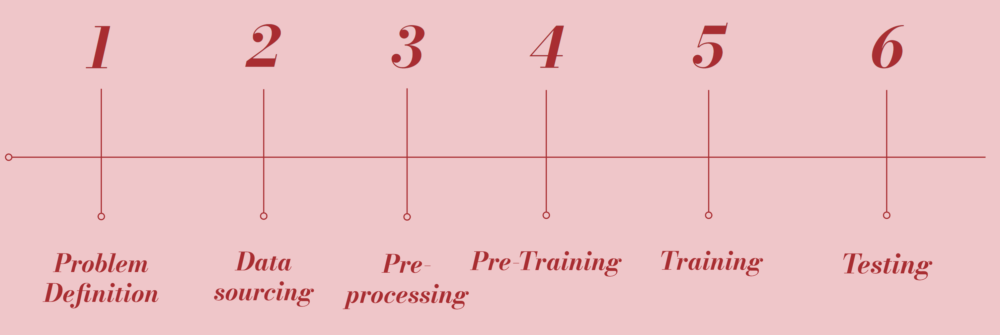
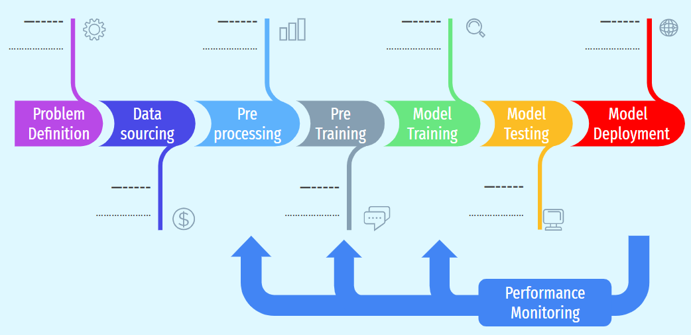

December 4, 2025
Modern AI systems are increasingly deployed in high-stakes settings such as health care, hiring, policing, and media platforms. Yet most regulatory debates still focus on model outputs rather than on the upstream pipeline that produces them. This paper argues that many of the most serious forms of algorithmic bias start long before model training. In fact, they can occur at many different points throughout the AI pipeline, such as problem definition, data sourcing, pre-processing, and large-scale pre-training. Once embedded into the model, these biases become hard to detect and even harder to remove.
Drawing on case studies in health care risk prediction, police grade facial recognition, and webscraped media datasets, we show how biased data pipelines can systematically under-serve marginalized groups and amplify existing inequalities. We then propose a set of policy interventions: mandatory data documentation, independent bias reviews, funding for diverse datasets, ongoing human oversight, and transparency requirements. These policies de-emphasize the output of the model, instead focusing on the pipeline as a whole. Our goal is to provide policy makers with concrete guardrails so that AI development can remain innovative while better aligned with fairness and accountability.
AI systems “learn” from data, and in doing so they inherit the biases
and power imbalances present in that data. When models are used in
health care, employment, credit scoring, or policing, these biases can
translate into systematic harms for already disadvantaged
communities.
Most policy and technical discussions focus on model behavior after
deployment: explainability tools, output audits, or bans on specific
high-risk applications. We argue that this focus is too narrow. Many
problems start much earlier in the AI pipeline, long before a model is
fine-tuned or evaluated. This paper asks: How should policy target
the upstream stages of AI development in order to reduce bias before
deployment?
At each stage, developers make choices that can systemically advantage majority groups or disadvantage minority groups alongside other hidden biases. We argue that “model bias” is better understood as pipeline bias and that policies for regulating data collection and AI development should be designed with this in mind.

In order to define the problem, the creators of a model must determine what their actual goal is and what factors are actually relevant to this issue. This is usually a purely logistical decision. However, this is the first place where bias can enter the pipeline. While most models won’t directly prioritize factors such as race or gender, they may prioritize factors that end up linked to these. If this happens, then any output of the model will inherently be biased, and if it isn’t, the model won’t be working properly.
Data sourcing is a topic that most companies choose not to discuss. Models can require trillions of points of data for training , and this data has to come from somewhere. Therefore, in order to meet the demands of modern AI models, companies cut corners wherever possible. This can take the form of scraping data without consent, or using pre-existing data sets that may be outdated . Even if companies collect data in a more legitimate fashion, they can still fall victim to many different types of polling biases depending on how the data is collected. This can easily lead to limited diversity in the training data, causing model bias down the line.
Before getting to the training, pre-processing is where raw data is turned into model-ready inputs. It is the first point at which well intentioned cleaning can silently distort who the model learns from. Concretely teams should first remove exact and near duplicates to prevent memorization, then normalize formats, such as encoding and tokenization, without discarding dialectal or minority language features. Then, document filtering criteria for toxic, low-quality content, and lastly, prevent the training test leakage by splitting data by time before any inspection. This is because labeling and heuristic filters often carry human bias. Annotation guidelines should be explicit, with labeler training and consistency checks. Ambiguous cases should be escalated rather than dropped silently to double check for biases or reasoning. A simple “before/after” representation can helps ensure that cleaning has not erased minority groups. Finally, ensure privacy safeguards are applied uniformly and recorded, enabling reviewers to trace how sensitive data was treated.
Pretraining comes next and supplies the model with its basic understanding of language or images from large general purpose datasets. Which is the foundation the entire system sits on. If these datasets are biased or low quality, that bias becomes part of the model at a deep level and is difficult to remove later. Accordingly, teams should specify the objective, for example, causal language modeling, masked language modeling, or contrastive learning. Also disclose the mixture weights for general versus domain data, and apply scalable hygiene such as deduplication and removal of unlawful or unsafe content, while documenting what remains. This stage strongly shapes downstream behavior, so careful data selection and documentation are critical from the start, complement this stage with privacy and memorization checks and keep their signals low. When the downstream task is narrow, use domain-adaptive pretraining to better match the task, and be transparent about the shift while checking how it changes performance for different users and data.
Now we get to the actual training portion of the AI pipeline. The model learns by minimizing loss on the data points so as to more accurately fit the data provided. How it does this is by using the gradient, AKA the rate of change, of the loss function, which allows for a better fit . This, however, unfortunately allows for optimization bias. Optimization bias is when the majority group is favored by the gradient descent, because they dominate the loss symbol, which can skew the generated value away from minority data. It can act as a shortcut, which is why it occurs without people noticing it. But this also comes at the cost of fairness.
In the testing stage, we check whether the model’s decisions are fair and whether they generalize beyond the training data. We test on different test sets that the model has never seen since overfitting, which occurs when it memorizes samples rather than learning patterns, is a major failure mode. In addition to headline accuracy, we report subgroup fairness with per-group tables and gap metrics, resistance to simple tweaks and distribution shift, and calibration. This gives a clearer view of how the model operates outside the restricted training environment and shows it is not depending on shortcuts from the training data.
In our project, we emphasized that bias cannot be fully eliminated at training time; instead, teams need an ongoing, looping process that watches how models behave once they are embedded in products. Before deployment, systems should be evaluated on realistic data that includes minority groups, with fairness metrics reported alongside accuracy.

After deployment, organizations should log decisions, track performance over time, and automatically flag shifts in data distributions or error patterns across subgroups. When problems appear, the response should feed back into earlier stages of the pipeline—revisiting pre-processing rules, re-balancing data, or adjusting training objectives—rather than treating monitoring as a one-off patch. This continuous loop is the only realistic way to manage bias in systems that keep learning from a changing society.
This case study shows how bias can arise during the training phase of the AI pipeline when models used in health care are trained on outcomes that reflect existing systemic inequities rather than true clinical need. The algorithm examined by Obermeyer et al. was designed for population health management and trained to predict future health care costs using historical insurance claims and utilization data. In health care and biotech settings, such models are often used to determine which patients receive additional resources or interventions. However, cost is a flawed proxy for health need. Due to long standing racial disparities in access, treatment intensity, and health system interactions, Black patients historically generate lower medical costs than White patients with similar or worse health conditions. These disparities are embedded in the training data, causing the model to learn patterns that systematically underestimate the health risk of Black patients.
This example represents a clear overlap between Group 2’s focus on AI in health care and biotech and our group’s focus on pipeline bias in AI. From the health care perspective, it demonstrates how widely deployed clinical algorithms can unintentionally reinforce inequities even without explicitly using race as an input. From a pipeline perspective, it highlights how bias can be introduced at the training stage through the choice of labels and optimization objectives. By training the model to minimize error on cost prediction rather than on direct measures of clinical need, the pipeline encodes structural health inequities into the model itself. This underscores the importance of examining not only the data used in AI systems, but also what the model is being trained to predict, especially in high stakes domains like health care and biotechnology.
This case study illustrates how bias can seep into facial recognition systems during the data preprocessing phase of the AI pipeline, particularly in surveillance and biometric applications. Preprocessing is the stage where raw images are cleaned, filtered, normalized, and labeled before training, and design choices at this stage can have significant downstream consequences. As shown in the NISTIR 8280 findings, facial recognition datasets often combine images collected under very different conditions, such as mugshots, border crossing photos, and visa applications. Preprocessing steps like face detection, alignment, cropping, lighting normalization, and quality filtering can perform unevenly across demographic groups because facial features, skin tone, age, and hair styles interact differently with camera sensors and image-processing techniques. When these steps result in lower-quality representations for certain groups, the data entering training is already biased, even before any model learning occurs.
This analysis sits at the intersection of Group 3’s focus on surveillance, facial recognition, and biometric data and our framework of pipeline bias in AI. From the surveillance and biometrics perspective, it shows how systems intended for large-scale identification and monitoring can disproportionately misidentify or fail to recognize certain populations. From a pipeline perspective, it highlights that bias can originate prior to model training through preprocessing decisions that assume homogeneity in facial appearance and imaging conditions. These early-stage biases propagate through training and evaluation, ultimately manifesting as higher false-positive or false-negative rates for specific demographic groups. This cross-sectional view emphasizes that fairness in biometric and surveillance technologies requires scrutiny of preprocessing pipelines just as much as model architectures or deployment policies, especially given the high-stakes societal impacts of facial recognition systems.
This collaboration examines how bias can arise during the data collection phase of the AI pipeline for AI-generated media, grounded in lessons from the case study . While the article itself focuses on model architecture and efficiency, it reinforces a core insight that is directly relevant to AI media systems: what information is compressed, preserved, or discarded is determined by what data is available and chosen at the outset. In large-scale AI media models, data collection is driven by massive web scraping of images, text, audio, and video. This process privileges content that is abundant, digitized, and highly visible online, which means dominant cultural aesthetics, popular narratives, and commercially successful creative works are overrepresented. Marginalized cultural forms, non-Western art traditions, and creators who publish outside mainstream platforms are underrepresented or absent entirely. Before any model training occurs, the dataset already reflects an uneven creative landscape.
This issue forms a clear cross-section between Group 8’s focus on AI, creativity, and moral agency and our focus on pipeline bias in AI. From a creative perspective, the data-collection phase determines the boundaries of what an AI system can imitate, remix, or generate, directly shaping creative norms and originality. From a moral agency perspective, the article’s emphasis on compression and representation highlights how AI systems are not neutral creators but artifacts shaped by human choices about whose data is collected, used, and abstracted. From a pipeline perspective, this shows that bias can originate before training through data collection practices that encode cultural dominance and ethical assumptions into the dataset itself. Together, this demonstrates that questions of creativity, authorship, and moral responsibility in AI media depend heavily on early pipeline decisions about data sourcing and inclusion.
As you have seen, pipeline bias is a major issue, and one that corporations don’t have an incentive to fix. As long as it is more cost effective to ignore the problem, companies will continue to do so. Therefore, our proposal would be to pass policies that force companies into accountability.
The main way that companies get away with creating and using biased models is through a lack of transparency. After all, if no one can check the training data, then there’s no way to prove that the problem lies there. That’s why transparency is so important, and why any policy hoping to mitigate AI bias would enforce it wherever possible.
In order to hold companies responsible for their actions, it is important that these actions are overseen and documented. This allows for pipeline issues to be address more quickly and directly, either by the respective company, or the government itself.
In order to assist with regulations regarding Bias, it’s important to make sure that all utilized data is available and documented. Without data documentation, it’s easy for training data issues to hide behind walls of complexity. Mandatory data documentation would prevent these issues from coming up, allowing training data issues to easily be discovered and confirmed.
One of the more difficult parts of identifying biases is that it can be hard to quantify what is biased due to subtle biases and biases in the underlying data. When dealing with data that can be more easily quantified, such as loan rates, it can be more easily noticed that it is biased by comparing the gradient descent to the "absolute" values that we would expect. However, there were cases where even this was misled due to underlying biases such as grids where the borrower was living . The complexity of this requires humans to overview this section of the pipeline as well.
While this does not fully match the other ideas listed, it is something that could be even more effective. By offering a large enough incentive, many companies would happily show off their newly fixed pipelines. However, this is the least likely policy to see implementation, due to the direct and ongoing monetary requirement.
Our proposal treats bias mitigation as a looping process across the whole pipeline rather than a one-time fix at deployment. However, current practice has several limitations. First, monitoring is often late and shallow: organizations focus on overall accuracy or a few fairness metrics, and only react after problems appear in complaints or the news. Second, pipelines are usually built as one-shot projects, which makes it hard to feed monitoring results back into upstream choices about targets, labels, and data balance. These constraints mean that our "check, detect, re-balance, retrain" loop is more of a direction than a complete solution, but it still improves on approaches that only look at model outputs in isolation. Another limitation that these policies don’t cover is the punishments for breaking these policies. If punishment is too little, companies will likely just shoulder the cost of breaking the rules rather than change how they are operating.
Demetrius Ho Sang - Formatting/Editing, Case Studies(3), Bias within
Health(3.1), Facial Recognition(3.2), AI Art(3.3),
Citations/References
Danny Roeder - Formatting/Editing, Abstract, Introduction(1),
Background(2), Training(2.5), Bias Reviews(4.4), Discussion(5),
Citations/References
Mingjun Jin - Title, Table of Contents, Abstract, Introduction(1),
Background(2), Deployment(2.7), Discussions(5),
Citations/References
Nicole Lin - Formatting/Editing, Abstract, Introduction(1),
Pre-Processing(2.4), Pre-training(2.4), Testing(2.6),
Documentation(4.3)
Thomas Wheelock - Abstract, Problem Definition(2.1), Data Sourcing(2.2),
Transparency(4.1), Human Oversight(4.2), Documentation(4.3),
Incentives(4.5)
This report wouldn't be possible without Srihari Sridharan, who's oversight helped guide the focus of our research. We'd also like to thank our fellow students for their consistent feedback and collaboration, which really helped in fleshing out this report.
Bibliography
“Ethical Use of Training Data: Ensuring Fairness & Data Protection in AI,” Lamarr Institute for Machine Learning and Artificial Intelligence, Jul. 03, 2024. https://lamarr-institute.org/blog/ai-training-data-bias/. Accessed: Dec. 2, 2025.
J. King and C. Meinhardt, “Rethinking Privacy in the AI Era Policy Provocations for a Data-Centric World,” Feb. 2024. Available: https://hai.stanford.edu/assets/files/2024-02/White-Paper-Rethinking-Privacy-AI-Era.pdf Accessed: Dec. 3, 2025.
IBM, “Model training,” Ibm.com, Feb. 13, 2025. https://www.ibm.com/think/topics/model-training. Accessed: Dec. 2, 2025.
Z. Obermeyer, B. Powers, C. Vogeli, and S. Mullainathan, “Dissecting Racial Bias in an Algorithm Used to Manage the Health of Populations,” Science, vol. 366, no. 6464, pp. 447–453, Oct. 2019, doi: https://doi.org/10.1126/science.aax2342. Accessed: Dec. 3, 2025.
P. Grother, M. Ngan, and K. Hanaoka, “Face recognition vendor test (FRVT) part 3: Demographic effects,” Face Recognition Vendor Test (FRVT) Part 3: Demographic Effects, vol. 8280, Dec. 2019, doi: https://doi.org/10.6028/nist.ir.8280. Accessed: Dec. 3, 2025.
C. Schuhmann et al., “LAION-5B: An open large-scale dataset for training next generation image-text models,” arXiv:2210.08402 [cs], Oct. 2022, Available: https://arxiv.org/abs/2210.08402 Accessed: Dec. 3, 2025. E. Martinez and L. Kirchner, “The Secret Bias Hidden in Mortgage-Approval Algorithms – The Markup,” themarkup.org, Aug. 25, 2021. https://themarkup.org/denied/2021/08/25/the-secret-bias-hidden-in-mortgage-approval-algorithms Accessed: Dec. 3, 2025.